To display raster surface models, select either Raster or Relief from the
Display menu. The former will display the primary raster based on its own colour table
(see Editing Colours below). Raster values that fall between those with defined colours
are given a linearly interpolated colour value. This gives a continuous range of colours for most DEMs.
Relief presentation will combine these same colour rules with a shaded relief calculation simulating local
texture and shadow. If a secondary raster is selected, the colour rules of this raster will be combined with
shaded relief calculated from the primary raster.
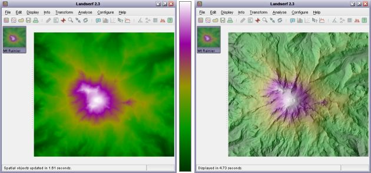
Raster and shaded relief display with default colour table
Various settings for the shaded relief calculation may be set from the configure->Shaded relief...
menu option or the 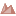 button. Each
of the parameters can be changed in realtime by moving the relevant slider. The small thumbnail image shows
the effect of these changing parameters on the surface.
The position of the 'sun' illuminating the surface is controlled by the azimuth and elevation
sliders. Lower sun angles give more pronounced shadowing effects, while azimuths from a southerly or
easterly direction give the impression of inverted topography. The relative balance of the colour and
shading can be controlled using the Percent shading slider. Vertical exaggeration can be used
to control the degree of shadow throughout the whole image and is particularly useful for larger DEMs representing non-mountainous
terrain. The Aspect bias slider controls the degree to which slope direction (aspect) rather than
slope steepness controls the amount of shadow. Higher values will tend to emphasise local detail in the surface and is
particularly useful for detecting error artifacts in elevation models. Lower values will tend to produce more realistic shading.
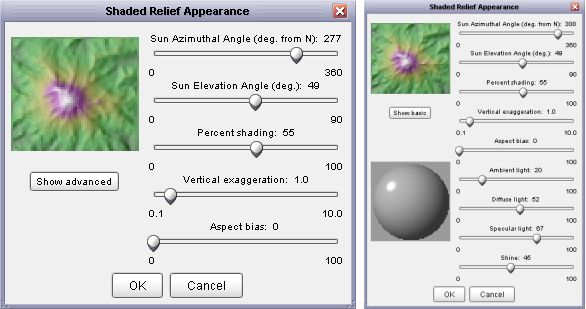
Basic (left) and advanced (right) shaded relief parameters
Selecting Show advanced reveals a second set of shaded relief parameters that are used when creating a shaded
relief surface as a surface parameter (see Chapter 7). These parameters control the
Phong lighting model, their effects being shown on the grey sphere as the sliders are moved. Note that none of these
advanced parameters have any effect on the relief shading produced by selecting Display->Relief.
After pressing OK in this window, the main raster display will be updated with the new settings.
Vector maps are displayed by selecting the Display->Vector menu. This menu item is
toggled on and off with further selection. Colours are assigned to vector values using interpolation of
colour rules in an identical way to rasters. Both primary and secondary vector maps can be displayed simultaneously
if selected.
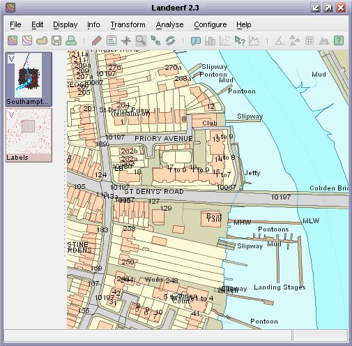
Vector map with points, lines, polygons and text labels
The appearance of vector maps can be controlled through the editing of its colour table (see below)
and by altering their appearance using the Display->Vector appearance menu item. This
brings up a window as shown in the figure below that allows the width of vector points and lines to be
set, as well as the transparency associated with vector polygons. Width values can be less than 1 in order to
create thin lines and small points. Setting line width to 0.2 often results in attractive unobtrusive linear
boundaries.Transparent polygons allow multiple features to be shown overlapping the same area on the ground. Polygon
boundaries can be turned on or off, and their colour can be set by clicking on the small square representing the
current boundary colour. Setting points or lines to Surround will draw boundaries around the
feature rather than at the feature location. This can be useful for drawing parallel lines along roads or for
circling points of interest.
Labels associated with point objects in the vector map can be optionally displayed by ticking the
Show labels box. The appearance of these labels can be controlled by selecting an appropriate
foreground and background colour (click the coloured square to change it). Particularly useful is the ability
to change the transparency of the background. By using semi-transparent background colour, sufficient contrast
with the foreground lettering can be used without obscuring any underlying map data (see figure below). The size
of the labels can controlled with the slider. The position of the label relative to its point location can be
controlled by selecting the relevant button under Text Alignment. When displaying labels is often
useful to select an appropriate textual attribute from the attribute table (see Section 3.4).
The vector appearance dialogue can also be used to set higher quality rendering of vector objects
(Optimize for quality), or faster rendering (Optimize for speed).
Appearance settings may be saved as a file by pressing the Save Styles button for later retrieval
via the Load Styles button. Vector draw style files should have the extension .vst.
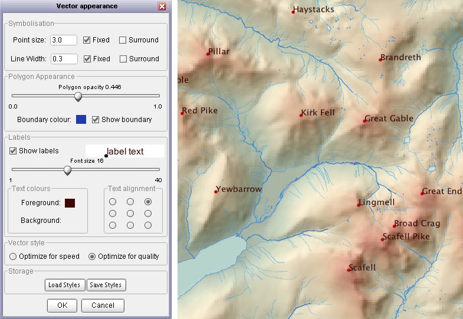 Vector display properties and sample output
Any vector or raster map can be enlarged by placing LandSerf into zoom mode. This is achieved either
by selecting the Display->Zoom mode menu option or by toggling the
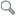 button. When in zoom mode, dragging
the mouse up and down over the main display area with the left mouse button pressed will zoom in and out
of the displayed image. Zooming can also be achieved by using the mouse wheel if present. Dragging the mouse
with the right button pressed (or <shift> left button) will allow a zoomed image to be panned in any direction.
When zoomed in to a part of a map, the area displayed in the main window is highlighted on the primary and secondary
thumbnails to the left. To reset a view back to its full extent select either the Display->Full image
menu option or the 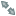 button.
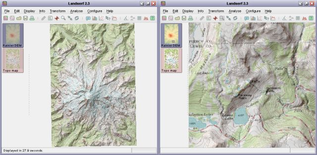
Surface with full extent (left) and zoomed-in area (right). Note small highlighted area on thumbnail in zoomed version.
Two raster maps may be combined in a single display in a number of ways. In addition to the shaded relief mapping described
in Section 4.1 three other forms of display combination can be selected from the Display menu.
Selecting Blend will take the average RGB values of the primary and secondary rasters to produce a new
colour map. A window will appear requesting the the percentage weighting given to the primary raster. The closer to 100%,
the closer the blended image will resemble the colours of the primary raster. If the resolutions of the two rasters are
different, the blended map will always use the resolution of the primary raster, so for the highest quality results,
the raster with the higher resolution should be selected as the primary raster.
 RGB blended slope and aspect map (50% slope, 50% aspect)
RGB blended slope and aspect map (50% slope, 50% aspect)
Selecting Hue-Intensity will use the hues ('colour') of the primary raster combined with the intensity (degree of
black/white) of the secondary. This can be useful for producing slightly bolder shaded relief maps (see figure below) as well
as for combining coloured with grey-scaled maps.
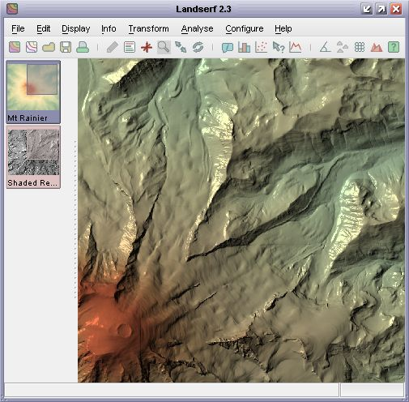
Hue-intensity map combining DEM (hue) and Phong shaded relief (intensity)
Selecting Hue-Saturation has a related effect to hue-intensity mapping, but in this case the intensity of the
secondary map is used to control the saturation (greyness/boldness) of the combined images. Low intensities in the secondary
raster result in washed out low saturation colours while brighter secondary raster values produce bolder colours. Such
combinations can be particularly useful for representing uncertainty, with stronger saturation indicating greater certainty
(see image below).
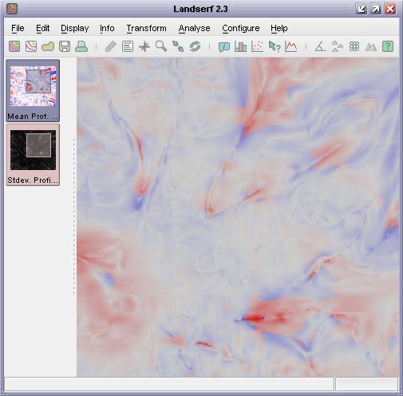
Hue-saturation map combining mean profile curvature (hue) local standard deviation of curvature measures (saturation)
The colour tables associated with either vector or raster maps may be modified by double-clicking on the thumbnail of the
object to edit (or by selecting Edit->Edit Vector / Edit->Edit Raster) and then clicking
the Edit button adjacent to the displayed colour bar. Colour tables are defined by a series of colour rules
that associate one or more attribute values with one or more colours. Discrete colour rules link a single attribute
with its own colour while continuous colour rules are used to interpolate a range of attributes with a range of colours.
Both discrete and continuous colour rules can be defined either graphically or numerically (see figure below).
The colour editor window will allow you to select one of several preset colour tables useful for mapping
onto continuous attributes such as elevation. The colour table is selected by choosing an appropriate colour
scheme from the drop-down menu towards the bottom of the colour editor window. By default, each is scaled between
the minimum and maximum values in the spatial object being displayed.
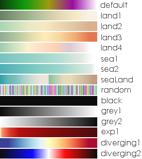
Preset colour tables
The 'land' and 'sea' colour tables follow guidance by the Swiss cartographer Eduard Imhoff and are particularly
suitable for continuous data that you wish to display with a landscape-like appearance. The 'random' colour table
is the only preset table that is specifically designed for discrete data. When selected, a random set of colours
will be given to each numeric attribute in the object being displayed. Once set, the colours associated with each
value will not change. The 'exp1' colour table is suitable for exponentially scaled data where most colour variation
occurs near the minimum data value. The diverging schemes are suitable for data that vary around a central data point.
This is assumed to be 0 if the spatial object being displayed contains both positive and negative values.
Once defined, colour rules can be modified by dragging the small vertical tic marks below the colour bar. These increase
or decrease the attribute values associated with a given colour rule. A single colour can be changed graphically by
double-clicking on one of the tic marks to bring up a colour chooser (see figure below).
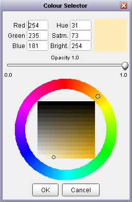
Graphical colour selector
For greater precision, colours tables can be edited numerically by selecting the Numeric
tab at the top of the colour editor window. Each rule is defined by 5 numbers. The first is the attribute
associated with a given colour. The remaining 4 numbers represent the red, green, blue
and alpha (transparency) components of the colour. For convenience if the alpha value is omitted, it is
assumed to be opaque (255). Likewise grey scale colours can be defined with a single number that will be applied
to red, green and blue components.
Colour tables may be saved for later use or shared use between spatial objects. This can be particularly
useful for frequently used datasets such as landcover maps that use particular IDs to represent particular
categories of information. The data sub-directory of LandSerf contains an example colour table
file for representing USGS landcover maps (see the tutorial for an example of
its use).